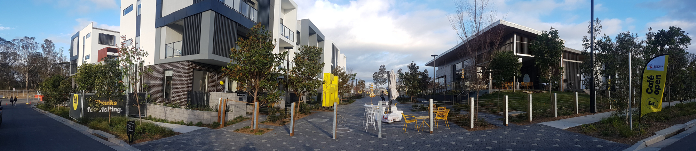
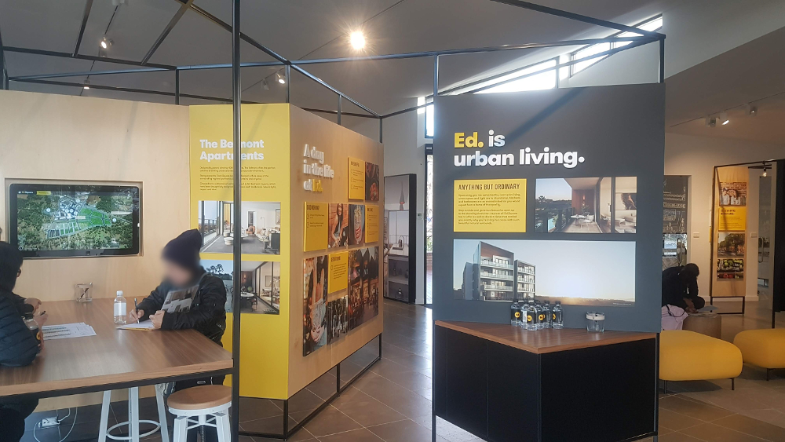
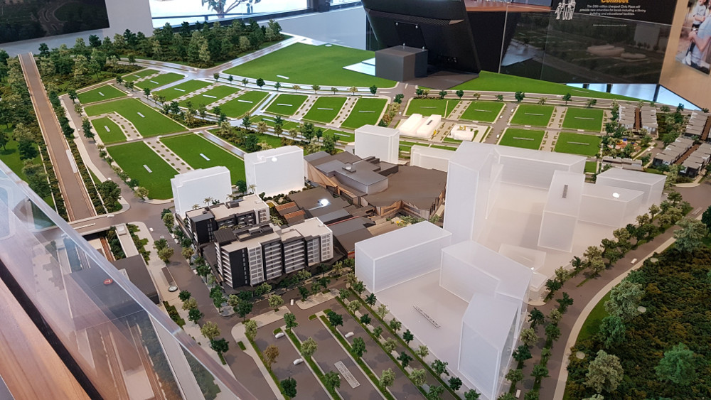
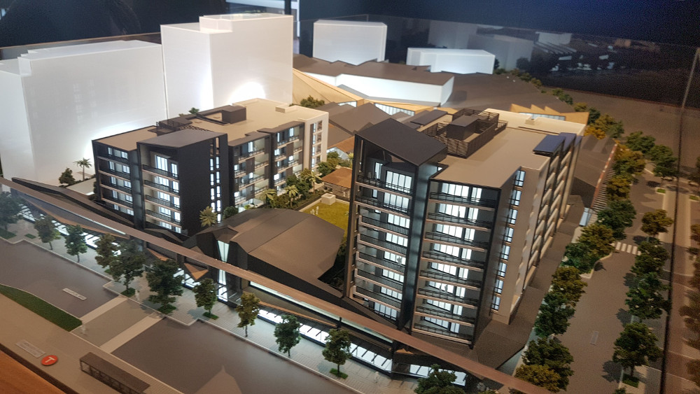
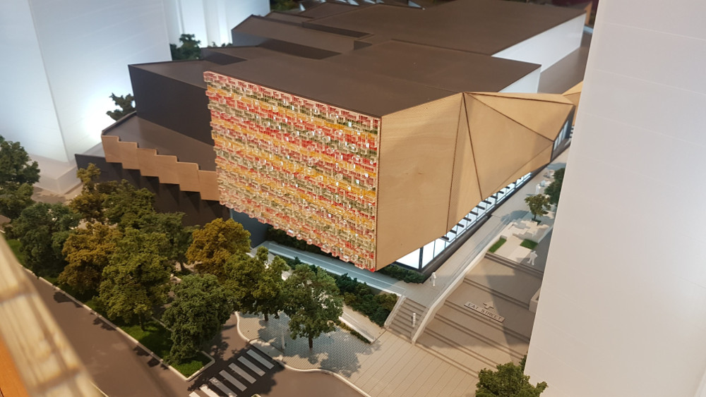
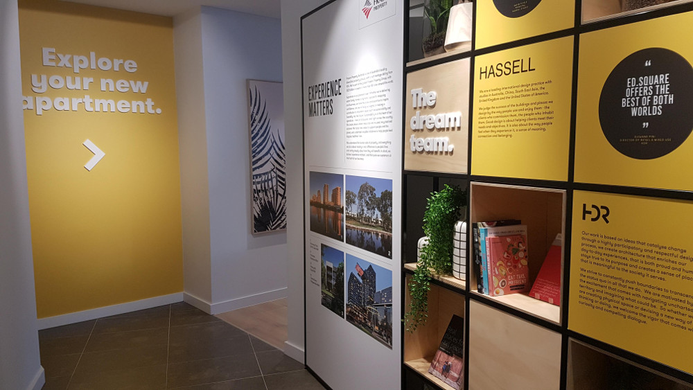
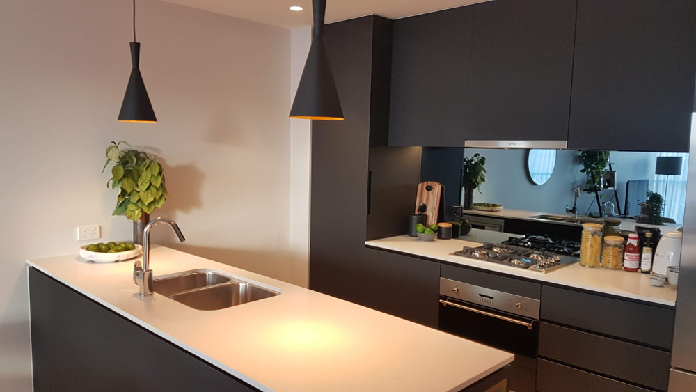
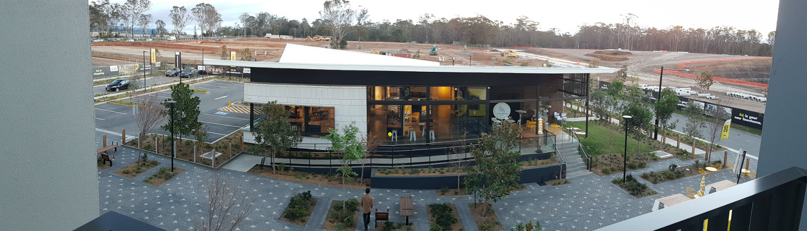

Three weeks ago, 30 kilometers away from the Sydney city centre in the rural suburb of Edmondson Park, Frasers Property Australia opened the doors of their display centre to the public. This brand new town centre development with residential and retail environments was designed by HDR Inc, of which I am part of the team of architects. I haven't really talked much about my architecture work before, but a brand new town centre in a previously uneventful part of Sydney is perhaps worth a blog article.
Perhaps let's start with the blurb of the development which I've copied directly from the Frasers official Ed Square website:
From the makers of Central Park Sydney, Ed.Square brings inner city edge, but with so much more than you expected.
Ed.Square is a diverse urban neighbourhood of restaurants and cafes; shopping and entertainment; playgrounds and parklands; a market place and Eat Street; adjacent to the Edmondson Park train station and all within walking distance from your own front door.
Ed offers an array of residences crafted by some of the worlds best architects that cater for every lifestyle. Whether you are a first home buyer or a multi-generational family, you'll always feel at home with Ed.
Sydney's South West is one of Sydney's growth trajectories, and so the Edmondson Park development is one of those which will supply the population growth.
Despite working on the development, I probably don't have any permission to use any marketing material, so you'll have to visit the Frasers website to see all the pretty pictures and marketing.
However, I did take some snaps of the display suite, so here it is! Let's start with the view you get as you enter. To the left are some display town houses. They are three storey products which surround the town centre. If you use some imagination you can read that there is the huge word "Ed." written in bright yellow in front of it. Ed's pretty hip, and is the anthropomorphism of the neighbourhood. To the right, you can see a cafe by the display centre itself, which apparently serves some pretty tasty dishes that the local community loves -- but it was closed when I arrived.

Here's what you see as you enter...

And a snap of the physical model...

Let's zoom in! The orange letter "T" is the train station, so you can see that the town centre is literally adjacent to it. The white buildings have yet to be released, so stay tuned.

Here's another angle, showing the grand cinema facade.

There's a display apartment too ...

... which shows some of the apartment, such as this fancy kitchen.

Here's another view from the balcony of one of the town houses looking at the display suite. In the background you can see a huge pit where construction will occur, surrounded by Cumberland Plain Woodland. I hear there could be koalas living there.

If you live in Sydney, feel free to drop by!